ParaView is an open-source, multi-platform data analysis and visualization application. Basically, ParaView was developed to analyze extremely large datasets using distributed memory computing resources. ParaView allows the user to apply filters to the solution to customize the visualization of the outputs.
In SVL we use ParaView for displaying POINT and CELL responses. In this section we presents some of the capabilities that ParaView has. Please visit https://www.paraview.org/ for more details.
REFERENCE:
- J. Ahrens, B. Geveci, C. Law, "Paraview: An end-user tool for large-data visualization, in: The Visualization Handbook", 2005.
- U. Ayachit, "The ParaView Guide: A Parallel Visualization Application", Kitware, Inc., USA, 2015.
Variables
The SVL output options are shown in the figure below:
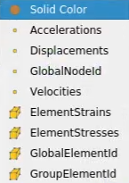
The POINT and CELL variables are:
- Displacements : The nodal displacement vector field. Its components are given as Ux, Uy, and Uz.
- Velocities : The nodal velocity vector field. Its components are given as Vx, Vy, and Vz.
- Accelerations : The nodal acceleration vector field. Its components are given as Ax, Ay, and Az.
- GlobalNodeId : The node identifier (tag) provided by the user.
- ElementStrains : The element internal strains (computed at the center of the element). These values are divided in solid (usual stresses) and structural (generalized stresses).
- ElementStresses : The element internal stresses (computed at the center of the element). These values are divided in solid (usual stresses) and structural (generalized stresses).
- ElementGlobalId : The element group identifier, the groups are: TRUSS (10), TRIA (11), QUAD (12), TETRA (13), HEXA (14), FRAME (20), SHELL (21), ZERO (31), PML (32), BWEN (41), HDRB (42), and NULL (50).
- GroupElementId : The element identifier (tag) provided by the user.
- Attention
- Please use ParaView version 5.9.0 (or above) to have all functionalities available in SeismoVLAB.
Open
The SVL output files can be opened in ParaView as follows:
- File -> Open...
- Select the files to open
- Click on Apply button
- The loaded files should be display on the RenderView window
The process to open SVL files are shown in figure below:
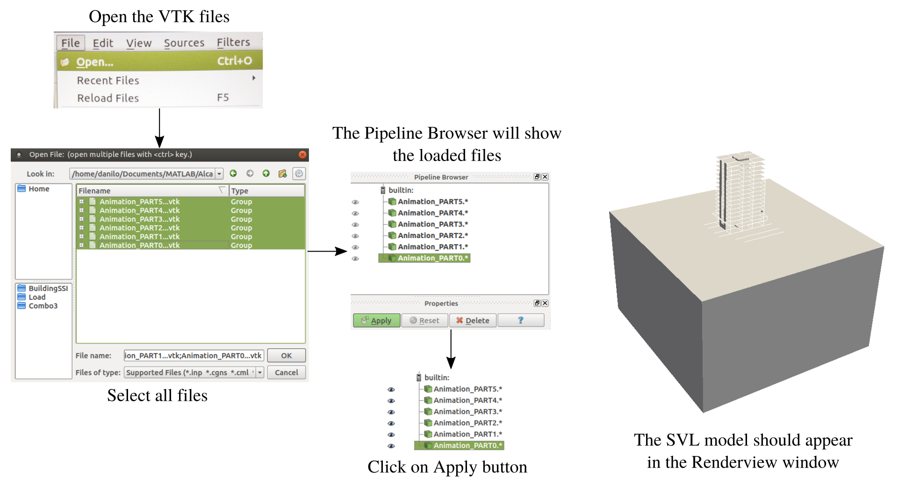
Display
ParaView offers several display options for the model. To change the display view:
- On the Visual Panel select one of the options:
- 3D Glyphs
- Outline
- Points
- Surface
- Surface with Edges
- Wireframe
- Each option will display the loaded model in a different way
- On the Pipeline Browser by clicking on the "eye" icon, the model can be turned on and off.
The process to display SVL model using different options is shown in figure below:
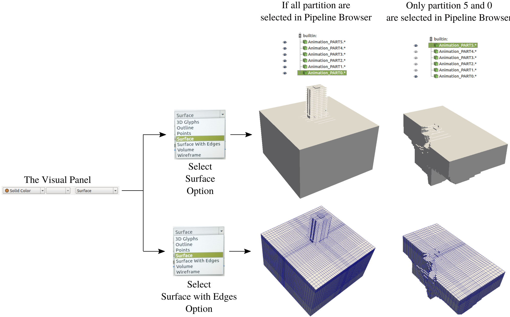
Clip
The SVL output files can be cut in different directions so the responses are visible inside the domain. A cut is performed in ParaView as follows:
- On the Pipeline Browser select the model
- Click on the Clip icon
- Change the Origin and Normal of the cut plane
- Click on Apply button
The process to cut a SVL model is shown in figure below:
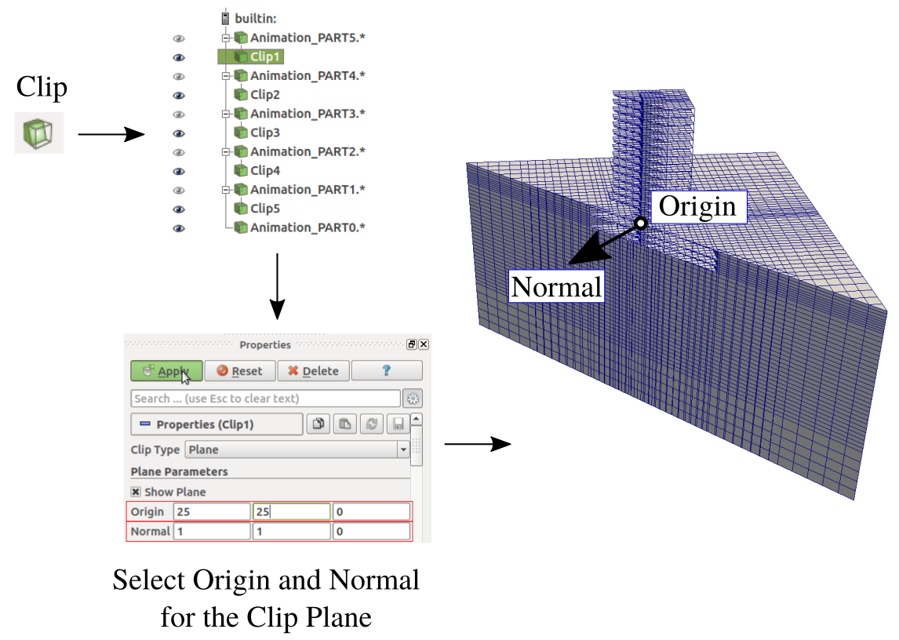
Point
The SVL nodal (POINT) responses for StaticAnalysis and DynamicAnalysis can be display as animations. The POINT in ParaView is activated as follows:
- On the Visual Panel select one of the POINT response options:
- Displacement
- Velocity
- Acceleration
- Reaction
- Then, select the response component to be display (Magnitude is by default)
- In the animation panel click on the "play" button to see the animation.
The POINT response animation is shown in figure below:
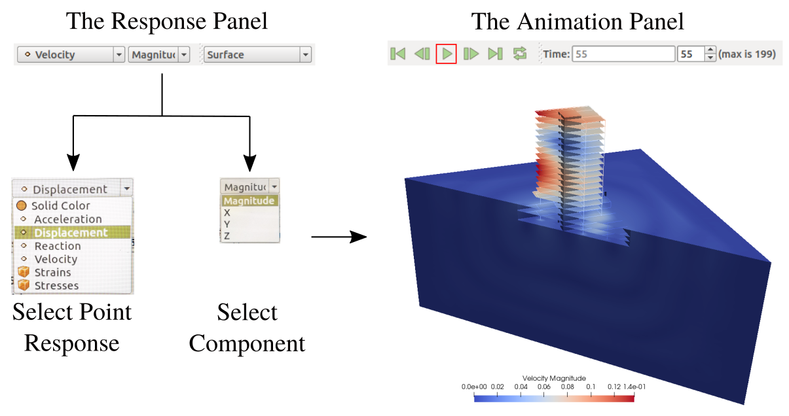
Cell
The SVL nodal (CELL) responses for StaticAnalysis and DynamicAnalysis can be display as animations. The CELL in ParaView is activated as follows:
- On the Visual Panel select one of the CELL response options:
- Then, select the response component to be display (Magnitude is by default)
- Magnitude
- XX
- YY
- ZZ
- XY
- YZ
- XZ
- In the animation panel click on the "play" button to see the animation.
The CELL response animation is shown in figure below:
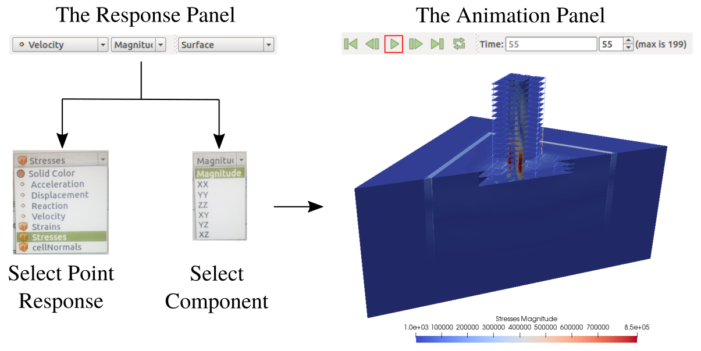
Warp
In ParaView the deformation that the model undergoes can be display using the WARP filter. The WARP in ParaView is activated as follows:
- On the Pipeline Browser select the model (or partition)
- Click on the Warp icon
- In the Properties window
- Make sure the option Displacement is selected in the field Vectors
- Set the scale factor so that the deformation is visible
- Click on Apply button
- In the animation panel click on the "play" button to see the animation.
The WARP filter is applied as shown in figure below:
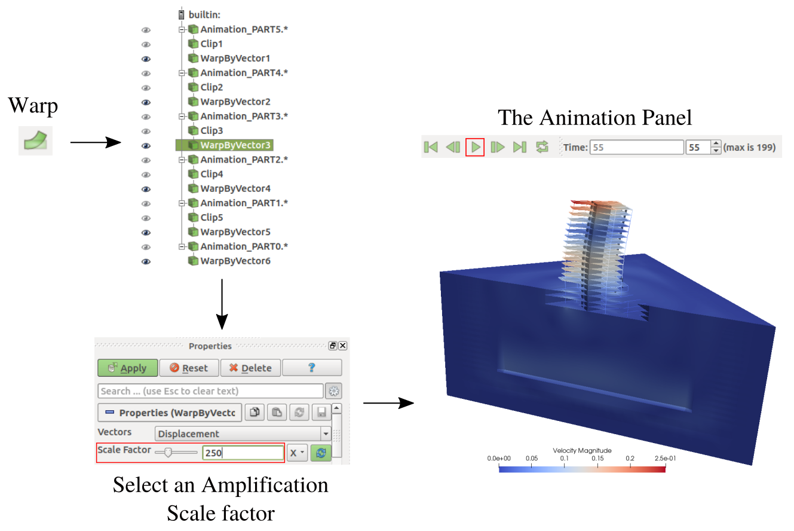
Glyph
In ParaView the vector field for POINT responses can be display using the GLYPH filter. The GLYPH in ParaView is activated as follows:
- On the Pipeline Browser select the model (or partition)
- Click on the Glyph icon
- In the Properties window
- Make sure the option Arrow is selected in the field Glyph Type
- Control the setting the Tip Resolution, Tip Radius, Tip Length and so on
- Select for example the Velocity in the field Vectors
- Make sure the option vector is selected in the field Scale Mode
- Set the Scale Factor for the magnitude of the arrows
- Click on Apply button
- In the animation panel click on the "play" button to see the animation.
The GLYPH filter is applied as shown in figure below:
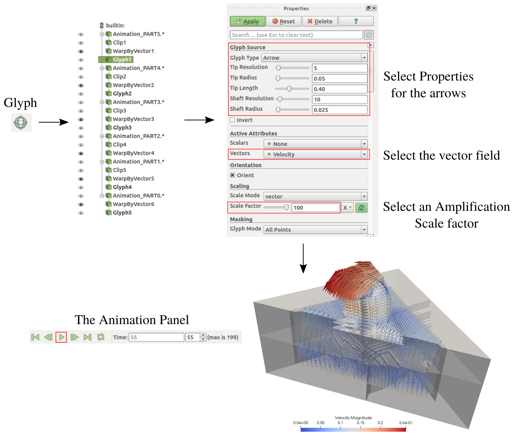
Selection
In ParaView a group of POINT and CELL can be selected to display different quantities. For example a particular POINT ID or Displacement can be obtained as follows:
- On the RenderView windows select "point selection" or "cell selection"
- Click on the POINT or CELL to be selected
- Go to the Selection Display Inspector windows and click on Point Labels or Cell Labels pulldown menus.
- Click on the desired quantity to display.
The NODE ID and Displacement selection is performed as shown in figure below:
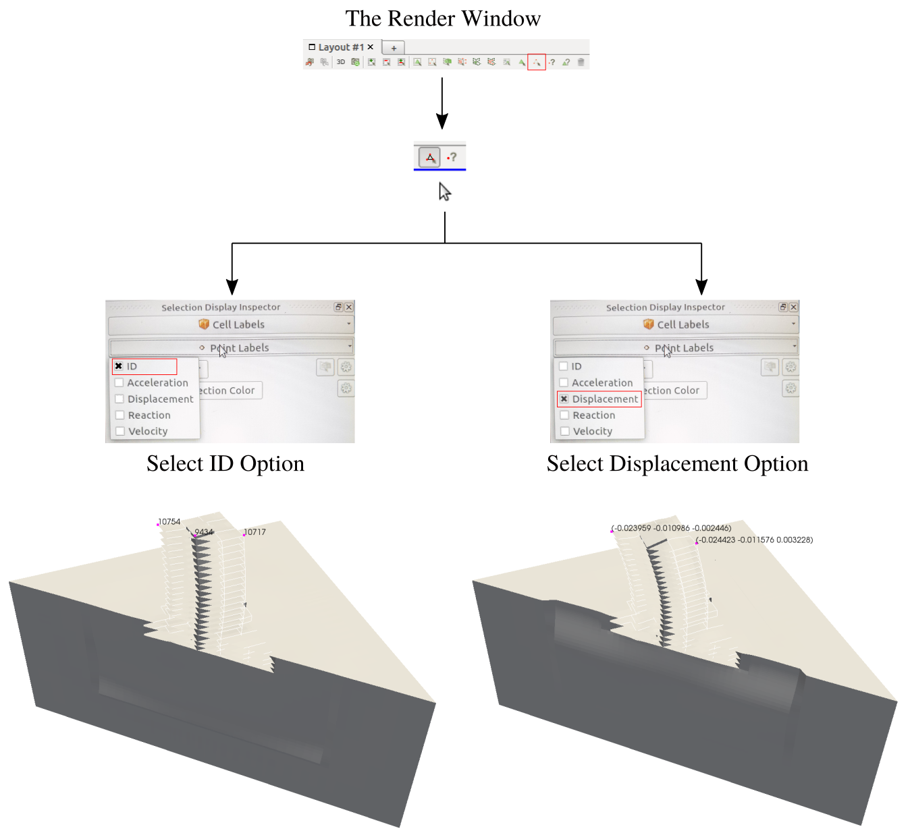
Point-Series
In ParaView time series can be obtained in a straightforward manner. Once POINT have been selected as discussed in Selection, then
- Click on the GlobalVariableOverTime icon
- Check the POINT ID previously selected coincide with the one displayed in Properties windows
- Click on Apply button
- The QuartileChartView windows will be open
- Make sure the box Only Report Selection Statistics is not checked
- Click on Apply button again
The time series process is summarized in figure below,
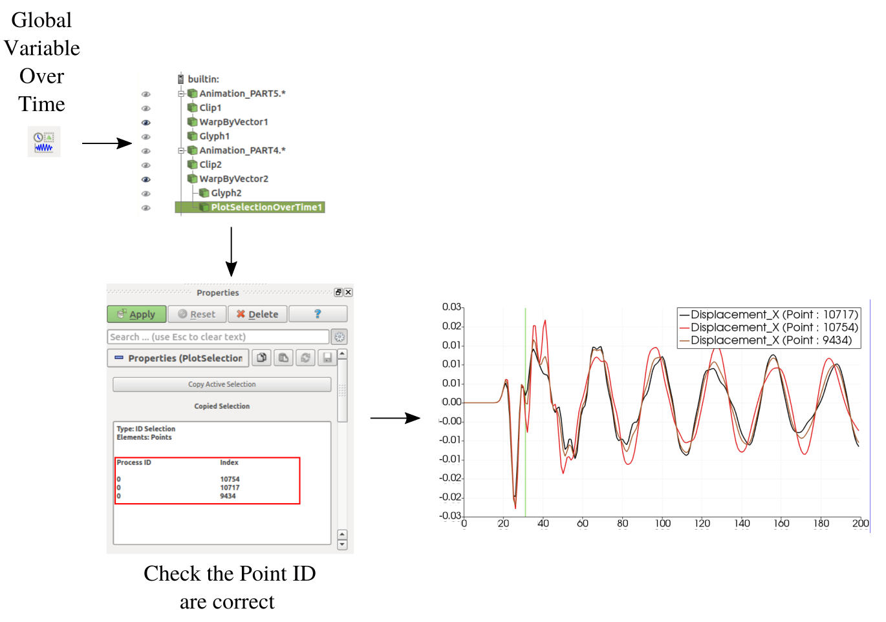
Line-Series
In ParaView line series can be obtained in a straightforward manner.
- Click on the PointOverLine icon
- Select the start and end points of the line
- Click on Apply button
- Select the responses to be displayed in properties
- The response will be displayed for each time step
The time series process is summarized in figure below,
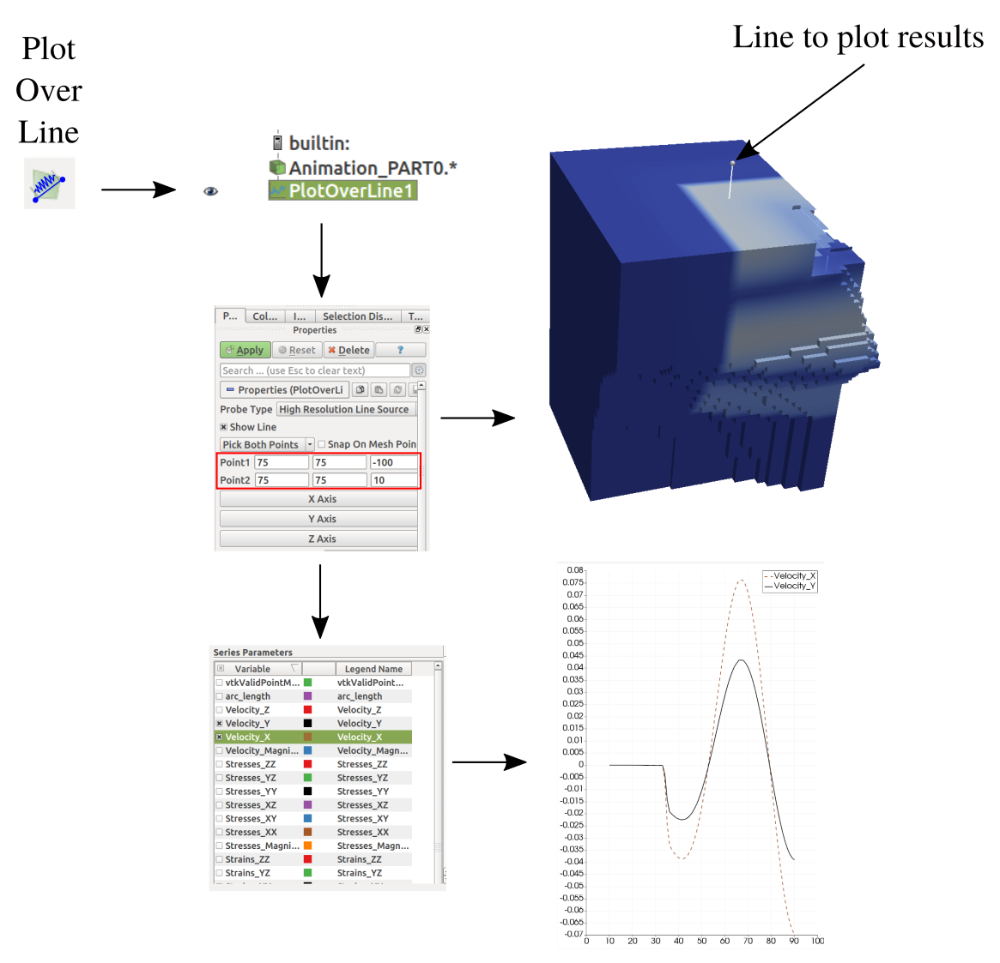
Range
In ParaView POINT and CELL response values are display in color. The limits of the color can be set in two ways:
- Click on the Auto Range Icon, or
- Click on the Set Range Icon
A color bar can be displayed by clicking on .
The response range is set as shown in figure below:
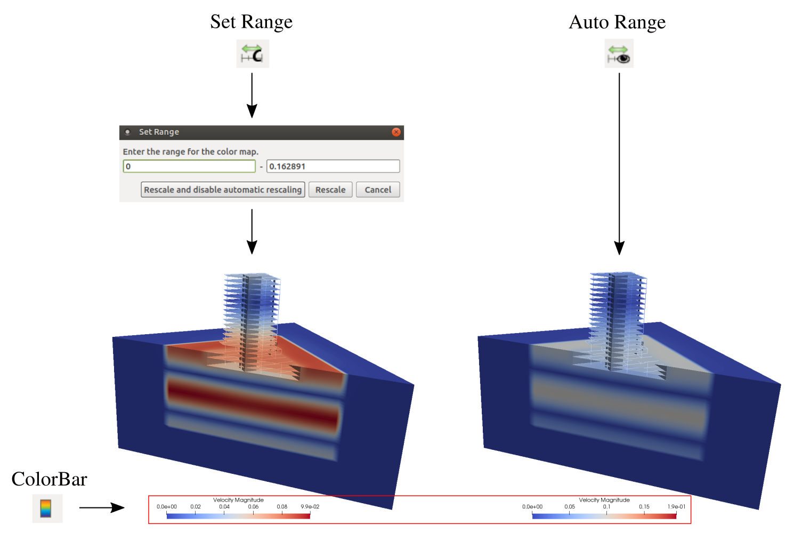


 1.8.13.
1.8.13.